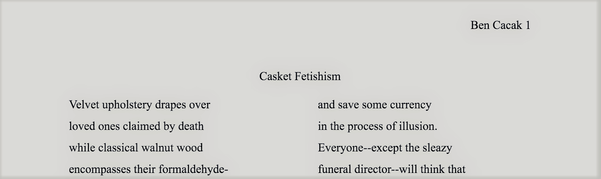

Creative Writing
Short Story: Do You Have a Girlfriend?
"Do You Have a Girlfriend?" is a short narrative detailing the experience of a young, queer man trying to balance family traditions and values with his new found identity. This piece was wriiten to challenge heteronormative assumptions about family members.
Free Verse Poem: Casket Fetishism
"Casket Fetishism" is one of my best freeverse poems yet. This piece criticizes the marxist idea of commodity fetishism taking place within the death industry. People are pressured to spend lots of money on a casket for their loved one who has passed away with the amount of money they spend coorelating to how much the grieving loved that person. I hope to challenge this with "Casket Fetishism."
Free Verse Poem: Simulacra and Escape
"Simulacra and Escape" is free verse poem that I wrote about having an anxiety attack. I critique the tactics that my former shrink told me to use in order to help.